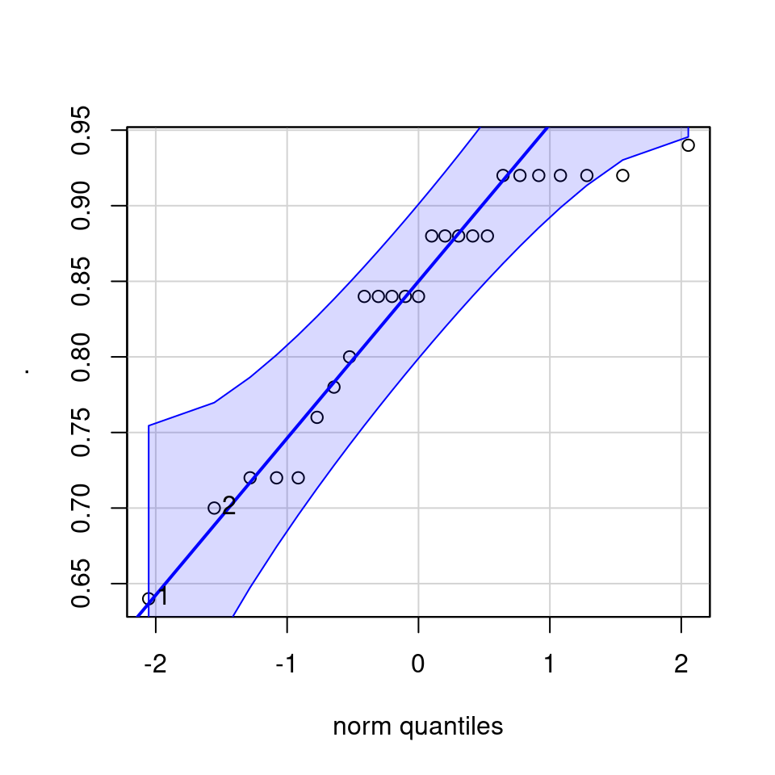
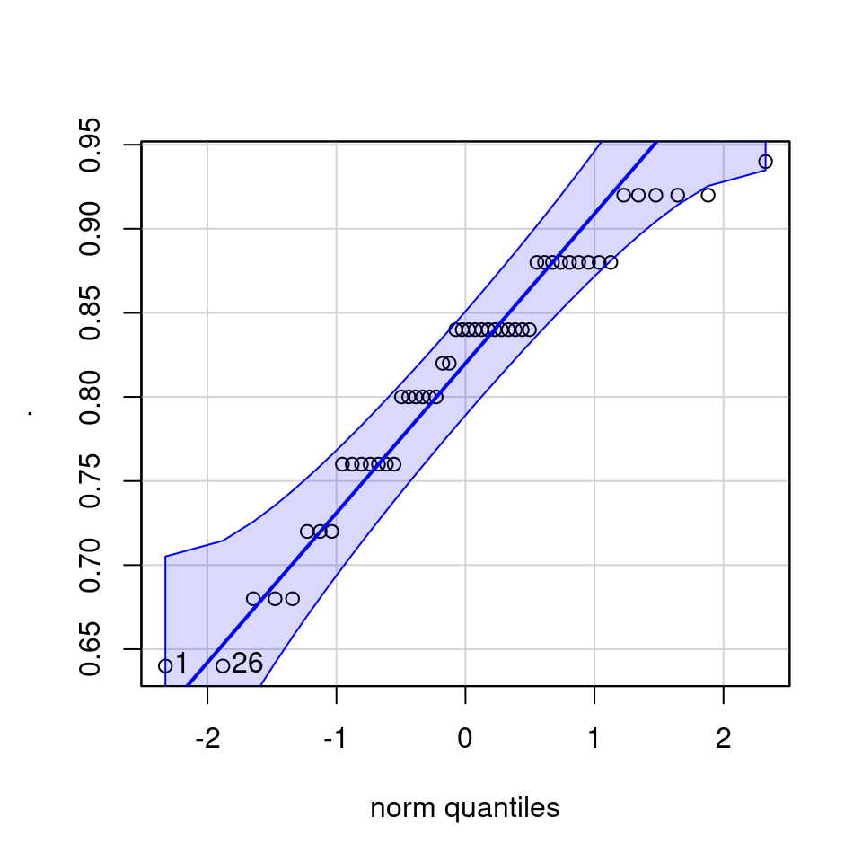
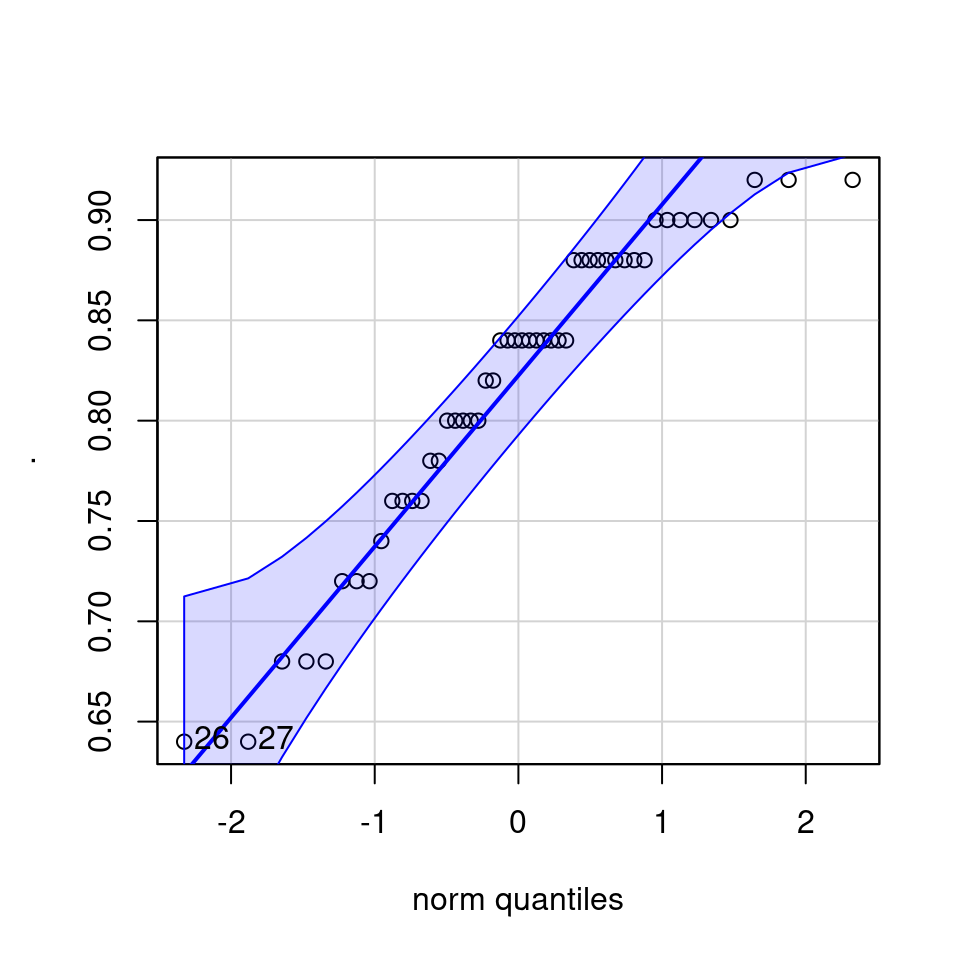

13 Complex models
13.0.1 Designing a Model
We are introduced to the fruitfly dataset Partridge and Farquhar (1981)3. From our understanding of sexual selection and reproductive biology in fruit flies, we know there is a well established 'cost' to reproduction in terms of reduced longevity for female fruitflies. The data from this experiment is designed to test whether increased sexual activity affects the lifespan of male fruitflies.
The flies used were an outbred stock, sexual activity was manipulated by supplying males with either new virgin females each day, previously mated females ( Inseminated, so remating rates are lower), or provide no females at all (Control). All groups were otherwise treated identically.
type: type of female companion (virgin, inseminated, control(partners = 0))
longevity: lifespan in days
thorax: length of thorax in micrometres (a proxy for body size)
sleep: percentage of the day spent sleeping
13.0.2 Hypothesis
Before you start any formal analysis you should think clearly about the sensible parameters to test. In this example, we are most interested in the effect of sexual activity on longevity. But it is possible that other factors may also affect longevity and we should include these in our model as well, and we should think hard about what terms might reasonably be expected to interact with sexual activity to affect longevity.
13.0.3 Checking the data
You should now import, clean and tidy your data. Making sure it is in tidy format, all variables have useful names, and there are no mistakes, missing data or typos.
Based on the variables you have decided to test you should start with some simple visualisations, to understand the distribution of your data, and investigate visually the relationships you wish to test.
This is a full two-by-two plot of the entire dataset, but you should try and follow this up with some specific plots.
GGally::ggpairs(fruitfly)13.1 Activity 1: Building a model
Think carefully about the plots you should make to investigate the potential differences and relationships you wish to investigate - try and answer the questions first before checking the examples hidden behind dropdowns.

Q Does it like treatment affects longevity?
We can also see that our distributions look roughly normally distributed, though we could use qq-plots to be sure.
Note it is only our dependent variable where we are strictly concerned about the distribution - independent variables have no strict requirements

## [[1]]
## [1] 1 2
##
## [[2]]
## [1] 1 26
##
## [[3]]
## [1] 26 27
Q Does it look like size affects longevity?
colours <- c("cyan", "darkorange", "purple")
fruitfly %>%
ggplot(aes(x=thorax, y = longevity, group = type, colour = type))+
geom_point( alpha = 0.6)+
geom_smooth(method = "lm",
se = FALSE)+
scale_colour_manual(values = colours)+
theme_minimal()
Figure 13.2: A scatterplot of thorax against longevity - colours indicate treatment types. This time I have included a line, as it will help determine if I think the slopes are different by group
Q Does it look like size affects longevity differently between treatment groups?
Here it does look as though larger flies have a longer lifespan than smaller flies. But there appears to be little difference in the angle of the slopes between groups. This does not mean we can't test this in our model, but we may decide it is not worth including.
We are also interested in the potential effect of sleep on activity, we can construct a scatter plot of sleep against longevity, while including treatment as a covariate.
fruitfly %>%
ggplot(aes(x=sleep, y = longevity, group = type, colour = type))+
geom_point( alpha = 0.6)+
geom_smooth(method = "lm",
se = FALSE)+
scale_colour_manual(values = colours)+
theme_minimal()
Figure 5.1: A scatter plot of proportion of time spent sleeping against longevity with a linear model trendline. Points represent individual flies, colours represent treatments.
In these plots - Are the trendlines moving in the same direction?
Here it does look as though sleep interacts with treatment to affect lifespan. As the slopes of the lines are very different in each group. But in order to know the strength of this association, and if it is significantly different from what we might observe under the null hypothesis, we will have to build a model.
13.1.0.1 Designing a model
When you include an interaction term, the numbers produced from this are how much more or less the mean estimate is than if you just combined the main effects.
# a full model
flyls1 <- lm(longevity ~ type + thorax + sleep + type:sleep, data = fruitfly)
flyls1 %>%
broom::tidy()| term | estimate | std.error | statistic | p.value |
|---|---|---|---|---|
| (Intercept) | -57.5275383 | 11.3554560 | -5.0660703 | 0.0000015 |
| typeInseminated | 7.9883828 | 5.3412012 | 1.4956154 | 0.1374236 |
| typeVirgin | -10.9075381 | 5.4745755 | -1.9923989 | 0.0486358 |
| thorax | 142.5090010 | 13.4115350 | 10.6258531 | 0.0000000 |
| sleep | 0.0904459 | 0.1885893 | 0.4795919 | 0.6324053 |
| typeInseminated:sleep | -0.1965054 | 0.2082301 | -0.9436937 | 0.3472544 |
| typeVirgin:sleep | -0.1124276 | 0.2166543 | -0.5189260 | 0.6047842 |
##
## Call:
## lm(formula = longevity ~ type + thorax + sleep + type:sleep,
## data = fruitfly)
##
## Residuals:
## Min 1Q Median 3Q Max
## -28.808 -6.961 -2.024 7.463 28.741
##
## Coefficients:
## Estimate Std. Error t value Pr(>|t|)
## (Intercept) -57.52754 11.35546 -5.066 1.52e-06 ***
## typeInseminated 7.98838 5.34120 1.496 0.1374
## typeVirgin -10.90754 5.47458 -1.992 0.0486 *
## thorax 142.50900 13.41154 10.626 < 2e-16 ***
## sleep 0.09045 0.18859 0.480 0.6324
## typeInseminated:sleep -0.19651 0.20823 -0.944 0.3473
## typeVirgin:sleep -0.11243 0.21665 -0.519 0.6048
## ---
## Signif. codes: 0 '***' 0.001 '**' 0.01 '*' 0.05 '.' 0.1 ' ' 1
##
## Residual standard error: 11.27 on 118 degrees of freedom
## Multiple R-squared: 0.608, Adjusted R-squared: 0.5881
## F-statistic: 30.51 on 6 and 118 DF, p-value: < 2.2e-16Because we have included an interaction effect the number of terms is quite long and takes more consideration to understand. We can see for the individual estimates that it does not appear that the interaction is having a strong effect (estimate) and this does not appear to be different from a null hypothesis of no interaction effect. But we we should use an F test to look at the overall effect to be sure.
# intercept
coef(flyls1)[1] +
# 1*coefficient for virgin treatment
coef(flyls1)[3] +
# 0.79 * coefficient for thorax size
(coef(flyls1)[4]*0.79) +
# 22 * coefficient for sleep
(coef(flyls1)[5]*22) + 13.2 Activity 2: Model checking
13.2.0.1 Model checking & collinearity
Before we start playing with the terms in our model, we should check to see if this is even a good way of fitting and measuring our data. We should check the assumptions of our model are being met.
performance::check_model(flyls1)Question - IS the assumption of homogeneity of variance met?
Question - ARE the residuals normally distributed?
Question - IS their an issue with Collinearity?
13.3 Data transformations
The most common issues when trying to fit simple linear regression models is that our response variable is not normal which violates our modelling assumption. There are two things we can do in this case:
-
Variable transformation e.g
lm(sqrt(x) ~ y, data = data)Can sometimes fix linearity
Can sometimes fix non-normality and heteroscedasticity (i.e non-constant variance)
Generalized Linear Models (GLMs) to change the error structure (i.e the assumption that residuals need to be normal - see next week.)
13.3.1 BoxCox
The BoxCox gets its name from its two inventors, George Box and David Cox. Implemented by the MASS package, when applied to a linear model it sytematically applies transformations by raising the y variable to a power (lambda).
The R output for the MASS::boxcox() function plots a
maximum likelihood curve (with a 95% confidence interval - drops down as
dotted lines) for the best transformation for fitting the data to the
model.
| lambda value | transformation |
|---|---|
| 0.0 | log(Y) |
| 0.5 | sqrt(Y) |
| 1.0 | Y |
| 2.0 | Y^1 |
# run this, pick a transformation and retest the model fit
MASS::boxcox(flyls1)Figure 13.3: standard curve fitted by maximum likelihood, dashed lines represent the 95% confidence interval range for picking the 'best' transformation for the dependent variable
Question - Does the fit of the model improve with a square root transformation?
13.4 Model selection
# Remove top-level interaction
flyls_sqrt2 <- lm(sqrt(longevity) ~ type + thorax + sleep, data = fruitfly)
anova(flyls_sqrt2, flyls_sqrt, test = "F")| Res.Df | RSS | Df | Sum of Sq | F | Pr(>F) |
|---|---|---|---|---|---|
| 120 | 67.33770 | NA | NA | NA | NA |
| 118 | 66.85853 | 2 | 0.4791614 | 0.4228409 | 0.6561716 |
Based on this ANOVA table, we do not appear to have a strong rationale for keeping the interaction term in the model (AIC or F-test). Therefore we can confidently remove the interaction, simplifying our model and making interpretation easier.
flyls_sqrt3a <- lm(sqrt(longevity) ~ type + thorax, data = fruitfly)
flyls_sqrt3b <- lm(sqrt(longevity) ~ type + sleep, data = fruitfly)
flyls_sqrt3c <- lm(sqrt(longevity) ~ thorax + sleep, data = fruitfly)
anova(flyls_sqrt3a, flyls_sqrt2)
anova(flyls_sqrt3b, flyls_sqrt2)
anova(flyls_sqrt3c, flyls_sqrt2)| Res.Df | RSS | Df | Sum of Sq | F | Pr(>F) |
|---|---|---|---|---|---|
| 121 | 67.67243 | NA | NA | NA | NA |
| 120 | 67.33770 | 1 | 0.3347353 | 0.5965194 | 0.4414276 |
| Res.Df | RSS | Df | Sum of Sq | F | Pr(>F) |
|---|---|---|---|---|---|
| 121 | 142.7961 | NA | NA | NA | NA |
| 120 | 67.3377 | 1 | 75.4584 | 134.4716 | 0 |
| Res.Df | RSS | Df | Sum of Sq | F | Pr(>F) |
|---|---|---|---|---|---|
| 122 | 104.4759 | NA | NA | NA | NA |
| 120 | 67.3377 | 2 | 37.13823 | 33.09133 | 0 |
Question - Should we drop sleep from this model?
13.5 Posthoc
Using the emmeans package is a very easy way to produce the estimate mean values (rather than mean differences) for different categories emmeans. If the term pairwise is included then it will also include post-hoc pairwise comparisons between all levels with a tukey test contrasts.
emmeans::emmeans(flyls_sqrt2, # model
specs = pairwise ~ type + thorax + sleep, # specifies pairwise contrasts wanted as well as means
type = "response") # this argument specifies whether means are presented on the sqrt transformation or 'original' scale## $emmeans
## type thorax sleep response SE df lower.CL upper.CL
## Control 0.821 23.5 60.1 2.34 120 55.5 64.8
## Inseminated 0.821 23.5 64.1 1.70 120 60.8 67.5
## Virgin 0.821 23.5 46.6 1.45 120 43.8 49.5
##
## Confidence level used: 0.95
## Intervals are back-transformed from the sqrt scale
##
## $contrasts
## contrast
## Control thorax0.82096 sleep23.464 - Inseminated thorax0.82096 sleep23.464
## Control thorax0.82096 sleep23.464 - Virgin thorax0.82096 sleep23.464
## Inseminated thorax0.82096 sleep23.464 - Virgin thorax0.82096 sleep23.464
## estimate SE df t.ratio p.value
## -0.258 0.185 120 -1.394 0.3474
## 0.924 0.184 120 5.016 <.0001
## 1.182 0.150 120 7.883 <.0001
##
## Note: contrasts are still on the sqrt scale
## P value adjustment: tukey method for comparing a family of 3 estimates
For continuous variables (sleep and thorax) - emmeans
has set these to the mean value within the dataset, so comparisons are
constant between categories at the average value of all continuous
variables.
13.6 Write-up
13.6.1 Methods
I constructed an ordinary least squares model to investigate the effects of sleep, mating type and body size on longevity in adult Drosophila melanogaster. I also included an interaction term between sleep and mating type. All Analyses and data cleaning was carried out in R ver 4.1.2 with the tidyverse range of packages (Wickham et al 2019), model residuals were checked with the performance package (Ldecke et al 2021), and summary tables produced with broom (Robinson et al 2022) and kableExtra (Zhu 2020).
13.6.2 Results
I tested the hypothesis that sexual activity is costly for male Drosophila melanogaster fruitflies. Previous research indicated that sleep deprived males are less attractive to females, this would indicate that levels of sexual activity might be affected by sleep and impact the effect on longevity, as such this was included as an interaction term in the full model. Body size is also know to affect lifespan, as such this was included as a covariate in the mode.
There was a small interaction effect of decreased lifespan with increasing sleep in the treatment groups compared to control in our samples, but this was not significantly different from no effect (F2,118 = 0.423, P = 0.656), and was therefore dropped from the full model (Table 15.1).
library(kableExtra)
flyls_sqrt2 %>% broom::tidy(conf.int = T) %>%
select(-`std.error`) %>%
mutate_if(is.numeric, round, 2) %>%
kbl(col.names = c("Predictors",
"Estimates",
"t-value",
"P",
"Lower 95% CI",
"Upper 95% CI"),
caption = "Linear model coefficients on square-root transformed dependent variable",
booktabs = T) %>%
kable_styling(full_width = FALSE, font_size=16)| Predictors | Estimates | t-value | P | Lower 95% CI | Upper 95% CI |
|---|---|---|---|---|---|
| (Intercept) | -0.51 | -0.68 | 0.50 | -1.98 | 0.97 |
| typeInseminated | 0.26 | 1.39 | 0.17 | -0.11 | 0.62 |
| typeVirgin | -0.92 | -5.02 | 0.00 | -1.29 | -0.56 |
| thorax | 10.15 | 11.60 | 0.00 | 8.42 | 11.88 |
| sleep | 0.00 | -0.77 | 0.44 | -0.01 | 0.01 |
There was a significant overall effect of treatment on male longevity (Linear model: F2,120 = 33.1, P < 0.001), with males paired to virgin females having the lowest mean longevity (46.6 days, [95%CI: 43.8 - 49.5]) (at an average body size of 0.82mm and 23.5% sleep), compared to control males (60.1 days [55.5 - 64.8]) and males paired with inseminated females (64.1 days [60.8 - 67.5 days]).
Post hoc analysis showed that these differences were not significant for males paired with virgin females compared to the control females (Tukey test: t120 = 5.016, P < 0.001) and inseminated female groups (t120 = 7.883, P < 0.001), but there was no overall evidence of a difference between inseminated and control groups (t120 = -1.394 P = 0.347) (Figure 19.4).
Comparing the treatment effects against other predictors of longevity such as body size and sleep, I found that sleep had an effect that was significantly different from no effect (Linear model: F1,120 = 0.33, P = 0.441). Body size (taken from thorax length) was a significant predictor of longevity (F1,120 = 134, P < 0.001), with each 0.1 mm increase in body size adding 10.2 days to the individual lifespan (sqrt scale 10.1 days per 1mm 95%CI[8.42 - 11.9]). It appears as though body size has a stronger effect on longevity than treatment, indicating that while there is a measurable cost of sexual activity to males, it may be less severe than in females (not compared here), and less severe than other measurable predictors.
Note: when transformations have been applied to a linear model care must be taken when presenting results. In this example coefficients are sqrt transformed, back transformation should be treated with caution. In addition note that the coefficient for size is "per 1mm" - but this is an unrealistic scale - a Drosophila is no more than 3mm in total length, so scaling to 0.1mm may make more sense.

Figure 6.1: A scatter plot of longevity against body size across three treatments of differening male sexual activity. Fitted model slopes are from the reduced linear model (main effects only of thorax size, sleep and treatment group), with 95% confidence intervals
13.7 Summary
In this chapter we have worked with our scientific knowledge to develop testable hypotheses and built statistical models to formally assess them. We now have a working pipeline for tackling complex datasets, developing insights and producing and explaining robust linear models.
13.7.0.1 Checklist
Think carefully about the hypotheses to test, use your scientific knowledge and background reading to support this
Import, clean and understand your dataset: use data visuals to investigate trends and determine if there is clear support for your hypotheses
Fit a linear model, including interaction terms with caution
Investigate the fit of your model, understand that parameters may never be perfect, but that classic patterns in residuals may indicate a poorly fitting model - sometimes this can be fixed with careful consideration of missing variables or through data transformation
Test the removal of any interaction terms from a model, look at AIC and significance tests
Make sure you understand the output of a model summary, sense check this against the graphs you have made
The direction and size of any effects are the priority - produce estimates and uncertainties. Make sure the observations are clear.
Write-up your significance test results, taking care to report not just significance (and all required parts of a significance test). Do you know what to report? Within a complex model - reporting t will indicate the slope of the line for that single term against the intercept, F is the overall effect of a predictor across all levels, post-hoc if you wish to compare across all levels.
Well described tables and figures can enhance your results sections - take the time to make sure these are informative and attractive.
13.8 Supplementary code
sjPlot A really nice package that helps produce model summaries for you automatically
| sqrt(longevity) | |||
|---|---|---|---|
| Predictors | Estimates | CI | p |
| (Intercept) | -0.51 | -1.980.97 | 0.500 |
| type [Inseminated] | 0.26 | -0.110.62 | 0.166 |
| type [Virgin] | -0.92 | -1.29-0.56 | <0.001 |
| thorax | 10.15 | 8.4211.88 | <0.001 |
| sleep | -0.00 | -0.010.01 | 0.441 |
| Observations | 125 | ||
| R2 / R2 adjusted | 0.628 / 0.616 | ||
library(gtsummary)
tbl_regression(flyls_sqrt2)| Characteristic | Beta | 95% CI1 | p-value |
|---|---|---|---|
| type | |||
| Control | |||
| Inseminated | 0.26 | -0.11, 0.62 | 0.2 |
| Virgin | -0.92 | -1.3, -0.56 | <0.001 |
| thorax | 10 | 8.4, 12 | <0.001 |
| sleep | 0.00 | -0.01, 0.01 | 0.4 |
| 1 CI = Confidence Interval | |||